Istorie
"Cele 7 minuni ale lumii " este o listă a șapte clădiri remarcabile din antichitate. Cea mai veche versiune cunoscută a listei aparține Epigraficului grec Antipater din Sidon și a fost elaborată în secolul al 2-lea î.en; această listă cuprinde 7 clădiri din Marea Mediterană și din Orientul Mijlociu, acestea fiind singura zonă cunoscută a grecilor antici.
Cele șapte clădiri remarcabile de pe listă au fost: Templul lui Artemis din Efes, Mausoleul din Halicarnas, Colosseumul din Rhodos, Marea piramidă din Giza, grădinile suspendate de Semiramida și Farul din Alexandria.
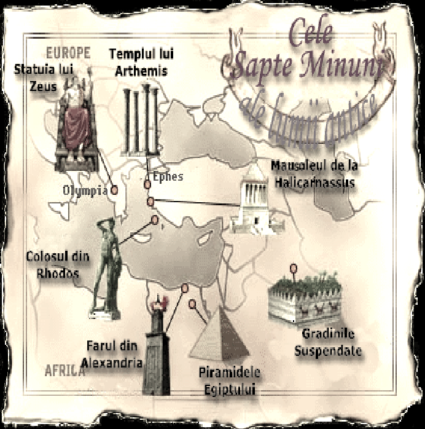O altă versiune a celor 7 minuni ale lumii antice a fost compusă și de matematicianul grec Philon of Byzantium, care a publicat o lucrare numită "De sete mundi miraculis" ("Cele șapte minuni ale lumii"). 6 elemente din această listă se găsesc în lista lui Antipater, dar în lista sa, Farul Alexandriei a fost înlocuit cu Pereții din Babilon.
În stabilirea celor şapte minuni ale lumii antice, grecii au avut un rol important. Istoricul Herodot, călătorind în Egipt in anul 450 î.Hr. spunea că: “Nicăieri în lume nu se pot vedea atâtea lucruri de o mareţie atât de greu de definit”. El exemplifica aceasta afirmaţie cu două mari construcţii egiptene apreciind că, sunt chiar superioare piramidelor: Lacul artificial Moeris şi Labirintul de la Fayum. Acesta fusese construit de faraonul Amenemhet III (1842-1798 î.Hr.) şi este de fapt un templu funerar cu două niveluri şi 3000 de camere, coridoare, coloane şi intrări secrete.
Tot Herodot i-a informat pe greci despre giganticele ziduri ale Babilonului, groase de 27 metri. Deşi se cunoşteau aceste relatări, cele două mari construcţii nu au fost considerate minuni ale lumii antice, menţionându-se cinci monumente greceşti: Templul zeiţei Artemis din Efes , Statuia lui Zeus din Olympia , Mausoleul din Halicarnas, Colosul din Rodos şi Farul din Alexandria, la care s-au mai adăugat Marea Piramidă din Giza şi Grădinile suspendate ale Semiramidei din Babilon.
O replică modernă a celor 7 minuni ale lumii antice a fost obținută astăzi, când la 07-07-2007, cu votul a 100 de milioane de oameni din întreaga lume, o listă cu cele mai impresionante construcții arhitecturale, acestea sunt: Zidul, orașul vechi din Petra, Machu Picchu, Chichen Itza, Colosseumul de la Roma, Taj Mahal și statuia lui Hristos din Rio de Janeiro.
Piramida lui Kheops
Marea Piramidă din Giza ,numită și piramida lui Kheops ,se află în orașul Gizeh, necropola orașului antic Memphis, actualmente parte a capitalei Cairo.Aceasta este singura minune a lumii care nu necesită descrieri ale istoricilor din antichitate sau ale poeților, deoarece este cea mai veche și totuși singura care a supraviețuit timpului.
Marea Piramidă din Gizeh a fost cea mai înaltă construcție din lume mai mult de 43 de secole, până în secolul al XIX-lea în 1889 când a fost construit Turnul Eiffel. La început, 146 m ,dar azi are138 m , înălțime, latura de 227 m și cuprinde 2.521.000 m cubi de piatră , iar fețele piramidei erau placate cu plăci șlefuite din calcar.
Piramida a fost construită de faraonul Khufu din a IV-a Dinastie, în jurul anului 2560 î.Hr. pentru a servi drept mormânt acestuia.
Potrivit lui Herodot, construcția ei ar fi durat peste douăzeci de ani și la ea ar fi lucrat 100.000 de oameni. Întâi a fost pregătit locul de amplasare și au fost transportate blocurile de piatră. Atunci era folosit un proiect pentru exteriorul piramidei, o șlefuire ce a dispărut de-a lungul timpului , nici azi neștiindu-se exact cum au fost așezate blocurile de piatră .
Piramida lui Keops este situată exact pe paralela de 30 de grade , paralelă care desparte uscatul de ape în proporţii egale , de asemenea fiecare faţă a Piramidei lui Keops este atent orientată spre câte un punct cardinal (N, E, S şi V), astfel cele două diagonale ale pătratului care formează baza Piramidei lui Keops, prelungindu-se spre NE şi NV, coincid cu limita răsăriteană şi cea apuseană a Deltei Nilului.
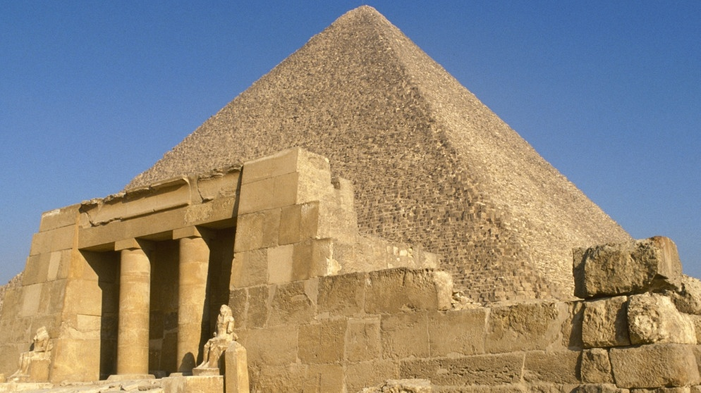Arabii când au cucerit Egiptul, în anul 641 e.n.,au găsit piramida intactă și după ce au deschis-o, căutând comoara lui Keops, sarcofagul era gol.
De-a lungul istoriei, piramidele de la Gizeh au stimulat imaginația oamenilor, aceștia numindu-le "Grânarele lui Iosef" sau "Munții Faraonului". Când Napoleon a invadat Egiptul în 1798 mândria resimțită de el atunci a fost exprimată în faimosul citat: Soldats! Du haute de ces Pyramides, 40 siècles nous contemplent („Soldați! 40 de secole ne privesc din vârful piramidei”).
Ocupând Egiptul, in secolul nouasprezece , englezii au măsurat Piramida a lui Keops (evident, cu măsurile lor de lungime) şi au obţinut ca o latură a bazei Marii Piramide de la Giza are 365 de coţi şi aproape un sfert, adică exact zilele dintr-un an.
În ultimii ani s-au mai descoperit încă patru camere, în apropiere de camera funerară, într-una fiind corabia regală, iar celelalte sunt în curs de explorare, dezvăluind poate ultimele secrete ale Marii Piramide: tezaurul și mumia faraonului.
Astăzi, Marea Piramidă este inclusă, împreună cu celelalte piramide și cu Sfinxul, în regiunea turistică a Platoului Gizeh. De asemenea, în zona aceasta se află muzeul ce găzduiește misterioasa Barcă Solară, descoperită abia în 1954, lângă partea de sud a piramidei. Această barcă se presupune că a purtat corpul lui Khufu în ultima sa călătorie, înainte de a fi înmormântat în piramidă. Se poate de asemenea să fi servit și ca mijloc de transport în viața de apoi, conform credințelor antice egiptene.
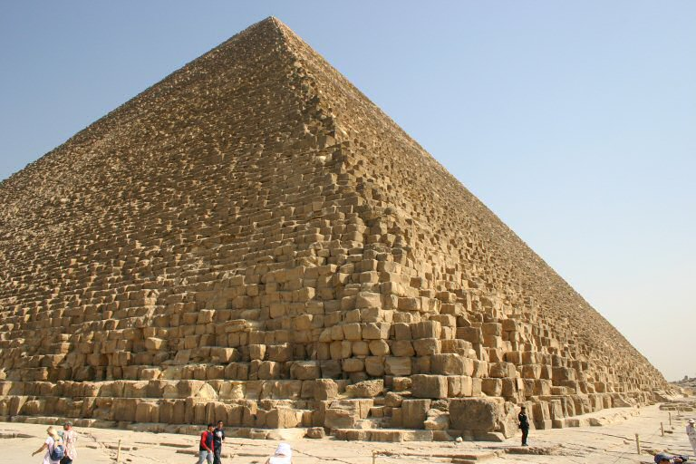Grădinile suspendate din Babilon
Grădinile suspendate din Babilon, au fost construite de regele Nabucodonosor al II-lea (605-562 î.Hr.) pentru una din soțiile sale, Amytis (Amuhea),fiica regelui Cyaxares al Mezilor, care regreta peisajul muntos, cu vegetație bogată al ținutului natal.. Vestitele grădini au fost dărâmate de perși, în timpul ocupării Babilonului, tot atunci fiind dărâmat și Turnul Babel.
Descrierea Babilonului de către Herodot corespunde, cu unele rectificări, cu rezultatul săpăturilor arheologice. Orașul avea mai multe ziduri de incintă, dispuse concentric. Orașul propriu-zis era cuprins în interiorul primei incinte, care avea latura de aprox. 1700 metri, și avea două cartiere, unul care cuprindea palatul regal, iar celălalt templul zeului Enlil (sau Bel, după denumirea semită), ambele pe malul stâng al Eufratului.
În colțul de nord-est al palatului, lângă poarta zeiței Iștar, se aflau grădinile suspendate. După cum spune Diodor din Sicilia , repetând probabil cele spuse de Ctesias, a cărui operă s-a pierdut . . Calificativul "suspendat", care însoțește numele acestor grădini, se datoreaza relatărilor în limbile greacă sau latină. În limba greacă cuvântul "kremastos" (κρεμαστος) și în latină cuvântul "pensilis" are o dublă semnificație: un obiect sau o construcție care atârnă ("suspendat"), sau o construcție susținută de coloane și arcade, o terasă, în general un obiect susținut la o anumită înălțime.
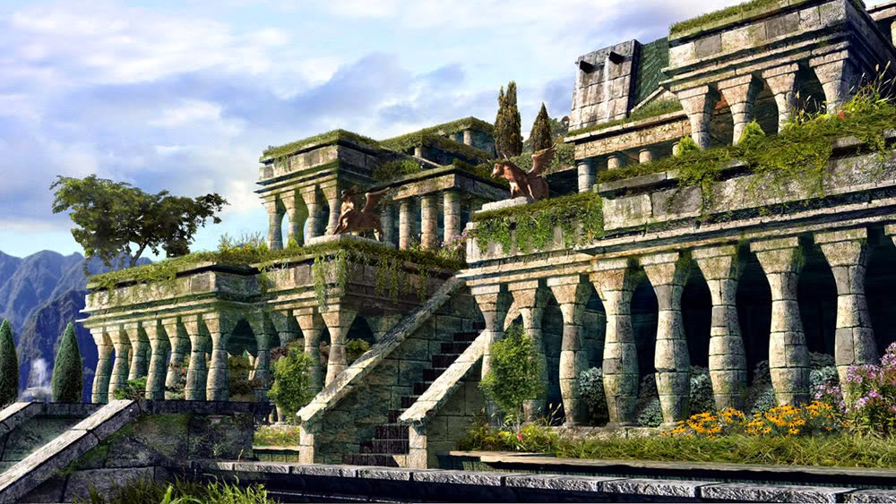Cea mai completă descriere a grădinilor se datorează lui Diodor din Sicilia, care arată că ele se compuneau din terase etajate în amfiteatru, cu o latură de aprox. 123 m. Terasele erau susținute de ziduri de piatră, construite la o distanță de trei metri unele de altele. Spațiile dintre ziduri erau acoperite cu bolți realizate din blocuri de piatră. Pe aceste blocuri era așezat un strat de trestie îmbibat în asfalt, deasupra trestiei urma un dublu rând de cărămizi arse, legate între ele cu mortar de ipsos, acoperite cu foi de plumb, pentru a desăvârși izolarea hidrofugă. Peste foile de plumb era un strat de pământ, de grosime suficientă pentru ca să poată prinde rădăcinile celor mai mari arbori. Diodor spune: "...Terasele erau pline de plante de toate felurile, în stare să încânte vederea prin mărimea și frumusețea lor".
În grosimea teraselor erau amenajate galerii și camere, care primeau lumina lateral, pe o singură latură, în așa fel încât galeriile și camerele de la un anumit nivel aveau în față priveliștea unei grădini, care se rezema pe terasele nivelului inferior.

Primele cercetări arheologice moderne au fost întreprinse de o misiune franceză condusă de Fulgence Fresnel în anii 1852 - 1855, explorarea completă a fost făcută de o misiune germană condusă de Robert Koldewey în anii 1899 - 1914. Săpăturile efectuate în colina El Kasr (în arabă: "castelul" sau "citadela") au descoperit ruinele marelui palat al lui Nabucodonosor, poarta principală a orașului și templul zeiței Nin-Mach. În partea de nord-est a palatului s-au pus în evidență fundațiile construcției care susținea probabil Grădinile suspendate. S-a descoperit și un coridor central, care are pe ambele laturi câte șapte camere, corespunzând în general cu descrierile lui Diodor. În afară de poziția ruinelor, de modul de construcție și de dimensiunile lor, care corespund cu ceea ce se cunoaște din descrierile autorilor antici, mai există o probă foarte convingătoare că într-adevăr acestea sunt ruinele fostelor Grădini suspendate: Robert Koldewey a găsit trei puțuri situate alăturat, în serie, unul central cu secțiune pătrată, între celelalte două cu secțiune ovală, care sugerează existența unei mașini hidraulice, care funcționa probabil pe același principiu ca un aparat cu găleți cu lanțuri. Acest dispozitiv putea da un flux continuu de apă.
Pe terenul vechiului Babilon langa localitatea de azi Al Hillah (Babil, din Iraq), pe partea estica a Eufratului, aproximativ la 50 km sud de Bagdadul de azi din Irak ,vechile gradini din antichitate sunt astăzi un deșert, aproape total lipsit de vegetație. Terasele grădinilor au dispărut de multă vreme, în locul splendorii de altădată, deșertul dă o impresie de tristețe. În vârful unei coline mai există un arbore secular, un atleth, considerat de unii nostalgici ca fiind o ultimă rămășiță a faimoaselor grădini.
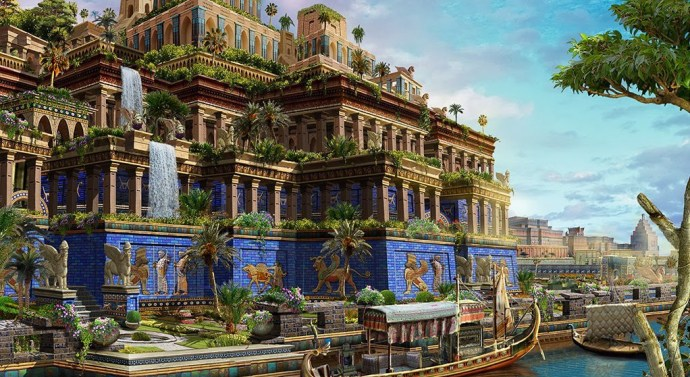Templul Artemisei din Efes
Templul Artemisei din Efes (în greacă: Artemision, lat. Artemisium), cunoscut și ca „Templul Dianei”, a fost un edificiu antic grec construit pentru zeița Artemis,zeita vanatorii si una dintre cele mai venerate divinitati ale Greciei Antice .Ea era fiica lui Zeus si sora lui Apollo.
Templul a fost ridicat în anul 550 î.Hr. în Efes, oraș aflat atunci pe teritoriul imperiului babilonian. Azi templul se află la 50 km la sud de orașul Izmir, Turcia. Din templul original, considerat una din cele șapte minuni ale lumii nu au rămas foarte puține relicve.
Templul a fost construit timp de 120 ani, după planurile concepute de către Chersiphron și fiul său, Metagenes. Clădirea a fost construită de 51m lățime și de 105 m lungime ,fiind de patru ori mai mare decât Parthenonul din Atena si a fost construit in intregime din marmura . 127 de coloane de 18 m înălțime susțineau acoperișul. În interiorul templului se afla statuia de 2 m a zeiței Artemis, acoperită cu aur și argint.
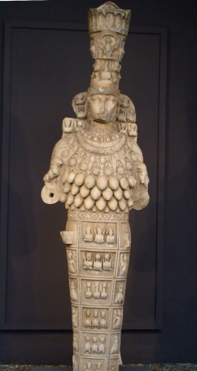La 21 iulie 356 î.Hr., templul a ars într-un incendiu; se spune că un om numit Herostratus a aprins focul și că și el a murit în foc. Istoria acestui om este una din cea mai dramatică și plină învățăminte din antichitate. El nu se deosebea prin nimic de semenii săi, însă, în dorința ca numele său să fie păstrat în conștiința oamenilor și în istorie a comis acest act criminal. De aici a luat naștere expresia „Slavă lui Herostrat”. Legenda spune că în noaptea în care templul a ars, s-a născut Alexandru cel Mare, iar Artemis a fost prea ocupată cu nașterea lui și nu a avut grijă de templu.
Alexandru a oferit oamenilor din Efes bani pentru a reconstrui templul, dar aceștia nu au acceptat. Construcția noului templu a început în anul 323 î.Hr, din banii efesenilor și a continuat timp de mai mulți ani. Acest templu era mult mai mare decât precedentul: 69 m lățime, 137 m lungime, dar numărul de coloane și înălțimea lor a rămas aceiași. Cultul zeiței Artemis era unul extrem de viu de aceea orașul a beneficiat de fonduri pentru a construit un mare templu.
În anul 162 d.Hr, în vremea împăratului roman Marc Aureliu, a fost dat un edict în urma căruia se recunoștea importanța festivalului religios anual dedicat lui Artemis de la Efes și se lungea perioada sa de la câteva zile la o lună. Zeița Artemis din Efes, în calitate de Mare Zeiță a fost în cele din urmă identificată cu Cybele. În anul 268, templul a fost avariat în urma raidurilor goților când aceștia au atacat Efesul și au incendiat mare parte din el. Istoria ulterioară a templului este destul de neclară, este posibil să fi fost renovat, dar a intrat în declin după incendiul din 268 care l-a distrus în mare parte și după indiferența împăraților și a cetățenilor cauzată de declinul cultelor Păgânism și de creștinarea imperiului. Se știe că multe dintre coloanele vechiului templu au fost transportate la Constantinopol pentru construirea catedralei Hagia Sofia sau Sfintei Sofia.
După săpăturile arheologice din secolul al XIX-lea, respectiv secolul XX, multe dintre comorile vechiului templu printre care statui, vase și basoreliefuri au fost transportate la British Museum din Londra și la Muzeul de Arheologie din Efes. În prezent vechiul site al templului atrage în continuare mii de vizitatori anual datorită importanței sale majore.
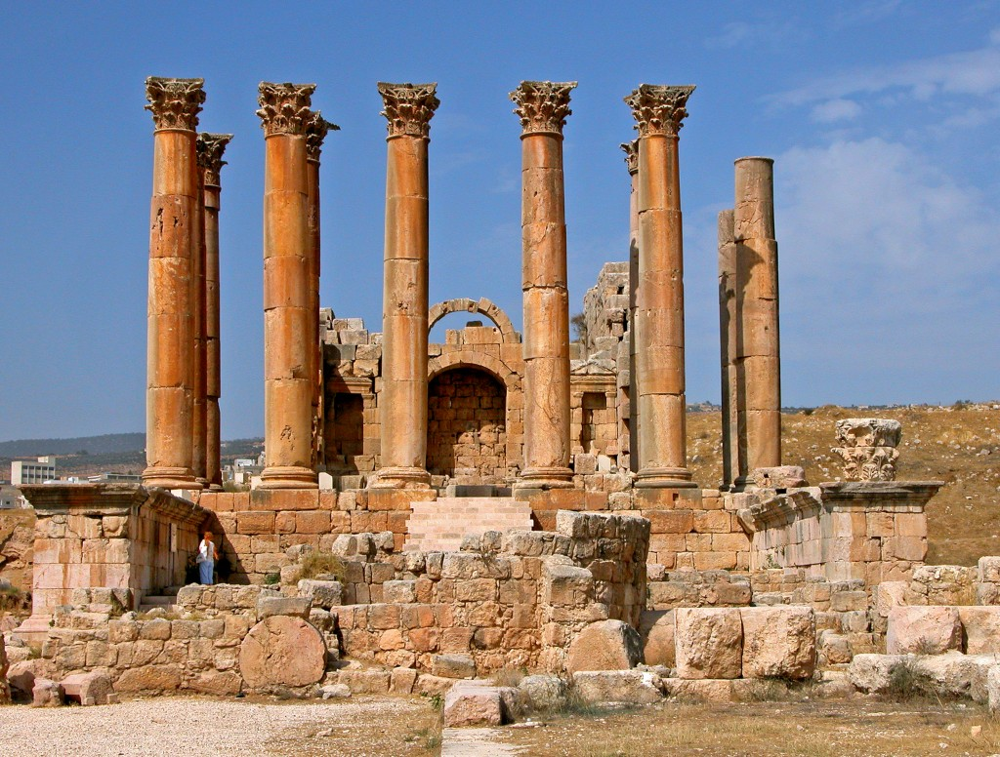 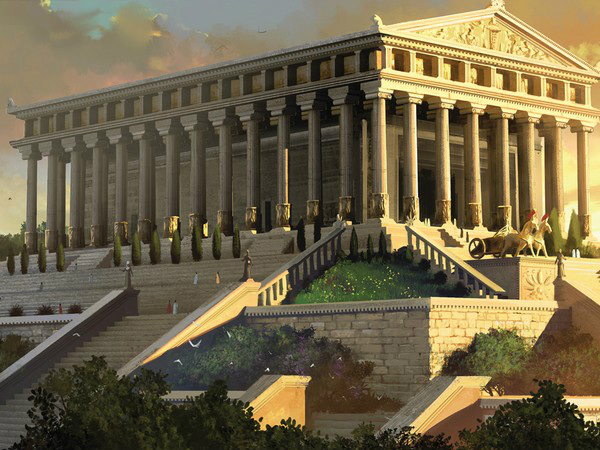Statuia lui Zeus din Olympia
După victoria decisivă a grecilor, conduși de Temistocle, asupra perșilor, în bătălia navală de la Salamina (480 î.Hr.), s-a hotărât să fie construit la Olympia un templu consacrat lui Zeus, care să fie cel mai mare și mai bogat din Altis. El a fost construit de arhitectul Libon originar din Elida (Peloponez) și a fost terminat în anul 457 î.Hr. Templul a fost realizat în ordinul "doric peripter hexastil", cu șase coloane în fațada principală și câte treisprezece coloane pe fațadele laterale, cu dimensiuni de 67,12 m lungime, 27,68 m lățime și 20,25 m înălțime totală, până la partea superioară a frontonului (conform descrierii istoricului Pausanias).
Templul era acoperit cu plăci de marmură de Naxos, iar frontonul de est, în loc de acrotera (mic piedestal servind ca suport statuilor, vaselor și altor ornamente), purta o Victorie aurită. Decorația sculpturală a celor două frontoane, executate se pare de Paeonios și Alcamenes, a făcut faima acestui templu. Interiorul era împărțit în trei zone: de la intrare până la a doua coloană era un spațiu liber, urma un spațiu închis până la cincea coloană, cu o balustradă de marmoră; de la a cincea coloană până la peretele de vest, era așezată statuia lui Zeus pe un soclu din marmură albastră de Eleusis.
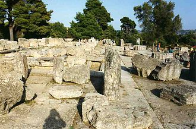Din măreața statuie ridicată lui Zeus la Olympia nu a rămas decât soclul. Aspectul ei ar fi rămas necunoscut, dacă Pausanias nu ne-ar fi lăsat bogata și amănunțita sa descriere. După cum spune Pausanias, sculptorul a lucrat la opera sa într-o clădire care se afla la vest de Altis și care era cunoscută și șase secole mai târziu sub numele de "atelierul lui Phidias". El a avut drept colaboratori, un pictor - fratele său, Panaenos - și un gravor, Colotes
După ce statuia a fost complet gata în atelier, ea a fost demontată și transportată piesă cu piesă în templu, unde a fost remontată pe soclul de marmoră dinainte pregătit.
Statuia avea înălțimea de aprox. 13 m, iar soclul nu depășea 14 m, înfățișându-l pe Zeus așezat pe un tron cu un spătar înalt, bogat decorat. În mâna dreaptă ținea o Victorie, lucrată în fildeș și aur, capul era încununat cu ramuri de măslin. În mâna stângă, Zeus ținea un sceptru pe care stătea un vultur de aur. O mantie îi cădea de pe umeri peste torsul gol și-i acoperea picioarele. Părțile corpului neacoperite erau de fildeș, picioarele erau rezemate pe un taburet, susținut în cele patru colțuri de sfincși de aur.

Pausanias descrie în amănunt toate picturile care împodobeau tronul și care reprezentau lupte legendare, figuri de zei și chiar scene din jocurile olimpice. Astfel, sub sfincșii care susțineau brațele tronului erau basoreliefuri care-i înfățișau pe Apollo și pe Artemis omorând copiii Niobei, pe traverse erau reprezentate lupte ale lui Heracles și ale lui Tezeu cu amazoanele, pe soclu, Afrodita ieșea din spuma mării.
Expresia feței lui Zeus imprima privitorului o profundă emoție. Forța și în același timp seninătatea au impresionat pe toți cei care au privit statuia și a căror părere s-a păstrat ca mărturie scrisă.
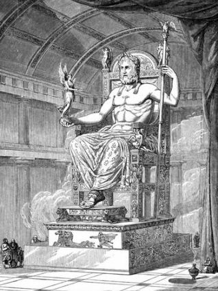Publicul nu se putea apropia de statuie, nici nu o putea vedea în fiecare zi. Antioh al IV-lea Epifanul (175 - 164 î.Ch.), regele Siriei elenistice, a oferit templului o draperie de purpură, care a fost montată în fața statuii și nu era îndepărtată decât la solemnități.
Lumina care pătrundea în templu și cea dată de flacăra parfumurilor care ardeau pe trepiede de bronz, era suficientă pentru a îmbrățișa toată măreția statuii. Umbre și lumini jucau pe sandalele de aur, prin cutele mantiei bogat drapate, pe torsul palid de fildeș, pierzându-se pe fața calmă și fruntea senină, în ochii care concentrau toată viața statuii.
Nu se cunosc cu siguranță împrejurările în care a dispărut opera lui Phidias. La aproape 60 de ani după terminarea lucrării, plăcile de fildeș au început să se desprindă, fiind nevoie de o restaurare. Se presupune că statuia ar fi fost distrusă o dată cu incendierea templului în anul 408 d.Hr. După unii cercetători, ea ar fi fost dusă la Constantinopol din ordinul împăratului Teodosiu al II-lea, unde ar fi fost distrusă de un incendiu în anul 475.
Deși templul a fost distrus aproape în întregime, au rămas totuși fundațiile, o parte din pardoseală și unele fragmente din coloane, din antablament și din frontoane, ceea ce a ajutat mult la reconstituirea lui.

Mausoleul din Halicarnas
Mausoleul din Halicarnas (azi Bodrum, Turcia) a fost opera arhitecților Pytheos și Satyros și a sculptorilor Scopas și Timotheos. Mausoleul poartă numele guvernatorului local Mausol, care a fost guvernatorul (satrapul sau regele) provinciei elenistice Caria (377-353 î.Ch.) pentru care fusese destinat, ca mormânt-templu. Acest monument arhitectural a fost considerat una dintre cele șapte minuni ale lumii antice.
Regiunea, importantă din punct de vedere strategic pentru navigația din Mediterana orientală, era adeseori teatrul unor conflicte militare. În anul 556 î.Ch., regele Persiei Cyrus al II-lea a cucerit această zonă, care îi oferea acces direct la mare. Imperiul său se întindea la est până la fluviul Indus, la nord până la țărmurile Mării Negre și la sud până la Oceanul Indian. Imperiul nu putea sa aibă un guvern centralizat, din cauza situației mijloacelor de transport și de comunicare din acea vreme. Regii perși puneau în locul lor un guvernator regional, numit satrap. Începând din anul 377 î.Ch., satrapul Mausol guverna Caria, regiunea de coastă, din sud-vestul Asiei Mici. Tatăl sau, satrapul Hekatominos, contribuise la înflorirea economică a portului Halicarnas. Mausol a continuat extinderea acestei capitale de provincie. De asemenea, s-a îngrijit să lase moștenire orașului un monument nepieritor, în amintirea tatălui său și a sa, pe locurile unde ei au funcționat ca guvernatori. Prieten al culturii elene, el i-a chemat pe arhitecții Satyros și Phytheos și pe sculptorii Scopas și Timotheos, toți din Grecia.
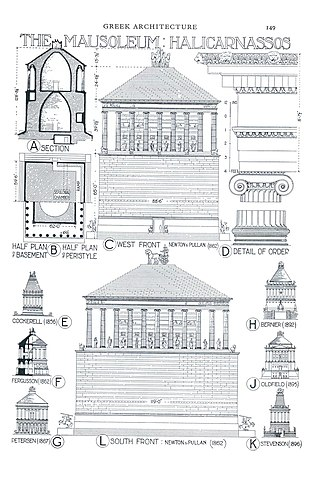Ei s-au deosebit de ceilalți concurenți prin proiectul lor, pe cât de neobișnuit, pe atât de impunător: nu au conceput un monument scund, tradițional in Grecia, ci o construcție foarte înaltă. Mausol nu a putut însă să vadă terminat mausoleul său. El a murit în anul 353 î.Ch. Văduva sa, Artemisa, care îi era și soră, a continuat lucrările începute, nu fără intenția de a ridica un monument și pentru ea însăși. De aceea, pe cvadriga ce urma să încoroneze monumentul s-au construit statuile cuplului princiar, Mausol și Artemisa. Artemisa nu a trăit destul de mult pentru a vedea opera terminată. A murit la doi ani după soțul și fratele ei. Arhitecții au continuat construcția până la sfârșit (335 î.Ch.), realizând un monument și pentru propria lor glorie, considerat mai târziu ca una din minunile lumii antice.
Pe un soclu înalt, cu cinci trepte, cu dimensiunile de 39 m lungime și 33 m lățime, se gasea un suport lung de 33 m, lat de 27 m și înalt de 22 m. Pe acesta se înălța templul funerar propriu-zis, susținut de 39 de coloane, având 39 m fiecare (singura parte ce amintea arhitectura greaca tradițională). Imediat deasupra acoperișului se mai inălța o piramidă cu 24 de trepte, pe al cărei vârf trunchiat era așezată cvadriga. Cu o înălțime totală de 49 m, mausoleul ar fi putut echivala în zilele noastre cu o clădire cu 16 etaje. Mâna omului nu a distrus cel mai celebru monument funerar al antichității, al carui nume a devenit generic pentru toate marile morminte construite mai tarziu. Marii cuceritori, cum ar fi Alexandru cel Mare, care a cucerit orașul Halicarnas în anul 334 i.Ch., au cruțat monumentul și l-au tratat cu respect. De-abia in secolul al XII-lea d.Ch., un puternic cutremur a distrus monumentul, rezervându-i o soartă tristă, cea de carieră pentru construirea castelului fortificat Sf. Petru al Cruciaților Ioaniți (în sec. XVI).
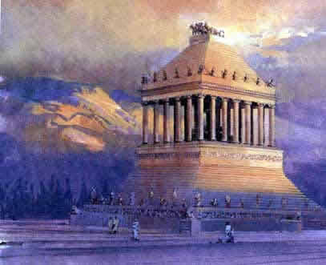În secolul al XIX-lea, consulul britanic a obținut mai multe statui din Castelul Bodrum; ei se află acum în Muzeul Britanic. În 1852, British Museum a trimis arheologul Charles Thomas Newton să caute mai multe rămășițe ale Mausoleului. Avea o treabă dificilă. El nu cunoștea locația exactă a mormântului, iar costul de a cumpăra toate parcelele mici din zonă pentru a căuta ar fi fost astronomic. În schimb, Newton a studiat conturile scriitorilor vechi ca Pliny pentru a obține dimensiunea și locația aproximativă a memorialului, apoi a cumpărat un teren în cea mai probabilă locație. Mai mult, după o cercetare mai detaliată, Newton a găsit câteva dintre secțiunile de fundație ale statuii, porțiuni de relief care au decorat peretele clădirii și porțiuni ale acoperișului clădirii.
Resturil e Mausoleului din Halicarnas, aflate în partea de nord a orașului Bodrum (la cca 1 km de centru) sunt cuprinse într-un muzeu în aer liber, fiind accesibile publicului.
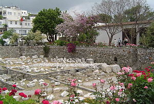Colosul din Rhodos
Colosul din Rhodos a fost o statuie imensă construită în antichitate pe insula Rhodos din Grecia, una din cele șapte minuni ale lumii antice. Statuia îl înfățișa pe zeul grec al Soarelui, Helios, și măsura între 32 și 36 de m. Construcția s-ar fi realizat în 12 ani și ar fi fost finalizată în anul 282 î.Hr. După unii, străjuia intrarea în portul din insulă. Conform altor cercetări, statuia s-ar fi aflat aproximativ pe locul unde în prezent este intrarea în Castelul Templierilor.
Rhodos devine în anul 408 î.Hr. capitala mai multor teritorii unite și un important port comercial. Se bazează pe un aliat (Ptolemeu I al Egiptului). Macedonenii încearcă să rupă acestă alianță, însă locuitorii din Rhodos sunt uniți și rezistă asediului. Pentru a-și sărbători victoria, rhodienii au vândut echipamentul de luptă și au decis să folosească banii pentru a construi o statuie colosală a zeului Helios.
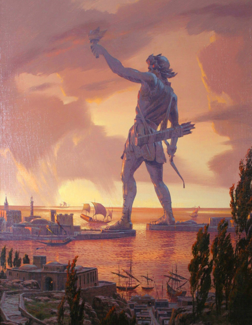Chares din Lindos, un sculptor de pe această insulă, a fost angajat pentru construcția statuii. Statuia ar fi străjuit intrarea în port timp de 56 de ani. Când soarele răsărea dimineața, se reflecta în suprafața de bronz și făcea ca figura zeului să strălucească. În 225 î.Hr., în urma unui cutremur, i s-a rupt un picior statuii. După prăbușirea statuii, locuitorii din Rhodos au vrut să o reconstruiască, primind chiar o ofertă de la Ptolemeu al III-lea, însă un oracol le-a interzis.După prăbușire rămășițele au fost puse pe un teren și peste 800 de ani, oamenii au venit în continuare să le vadă. După ce arabii au cucerit insula în anul 653, statuia a fost vândută de către aceștia unui evreu din Siria, care a cărat-o pe 900 de cămile, după cum spune legenda.
Statuia era construită din bronz și întărită ulterior cu fier și piatră. Se spune că au fost folosite 15 tone de bronz și 9 tone de fier, însă calculele arată că aceste cantități au fost chiar mai mari. Avea o înălțime de 33 m și stătea pe un soclu înalt de 15 m. Teoria că acest colos stătea cu câte un picior pe fiecare mal al portului este doar o legendă, pentru că în nici o scriere nu se specifică acest lucru. Se crede că ea a inspirat sculptorul francez Auguste Bartholdi care a construit Statuia Libertății din New York.
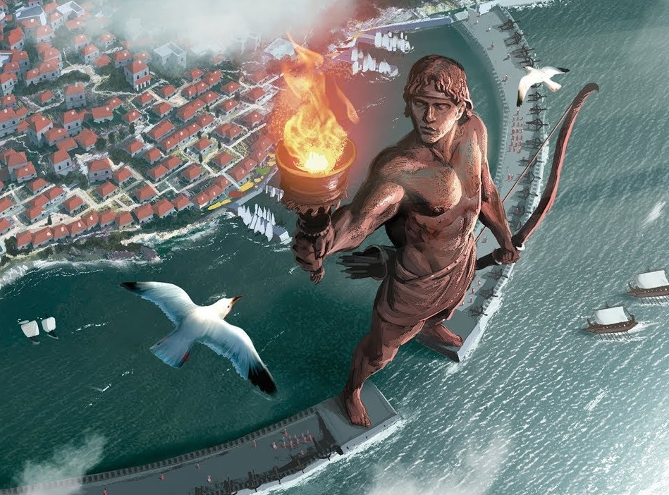În 2008, The Guardian a anunțat că o statuie modernă a fost construită la intrarea în port a artistului german Gert Hof. A fost o sculptură uriașă, realizată parțial din arme topite din întreaga lume. Ar costa până la 200 de milioane de euro.
În decembrie 2015, un grup de arhitecți europeni a anunțat planurile de a construi o statue moderna, în care să se înalțe două diguri la intrarea în port, în ciuda unei predispoziții de dovezi și a opiniei științifice că monumentul original nu putea să stea acolo. Noua statuie, de 150 de metri înălțime (de cinci ori mai mare decât înălțimea originalului), ar costa 283 milioane USD, finanțate prin donații private și aglomerări. Statuia va include un centru cultural, o bibliotecă, o sală de expoziție și un far, toate alimentate de panouri solare.
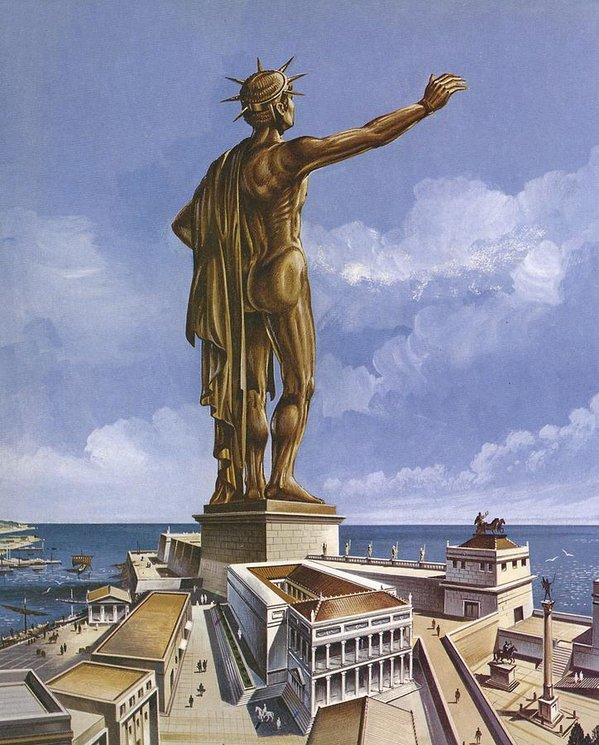Farul din Alexandria
Farul din Alexandria a fost construit în secolul al III-lea î.Hr. în Egipt pe insula Pharos de lângă orașul antic Alexandria. La început farul a fost doar un simbol al portului, apoi a devenit indicator pentru marinari.
Țărmul Alexandriei era prea periculos pentru navele care treceau pe acolo, așa s-a născut ideea de a construi ceva care să indice drumul corect către port. În anul 290 î.Hr. regele Egiptului Ptolemeu I Soter, a început construcția farului, care a fost terminată după moartea lui de către fiul său, Ptolemeu al II-lea Philadelphus.
Farul a fost construit după concepția architectului Sostratus. Legenda spune că regele Ptolemeu i-ar fi interzis lui Sostratus să-și pune numele pe construcție, dar Sostratus a scris pe baza farului „Eu Sostratus, fiul lui Dexiphanes din Chinidai, ofer această operă Zeilor Navigatori și oamenilor care călătoresc pe mări”; în greacă veche:
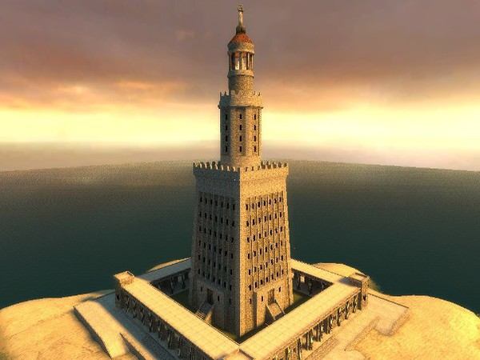A fost construit din blocuri uriașe de marmură albă și avea trei nivele separate. Baza farului avea o formă pătrată și era înaltă de 55.9 m. În mijloc secțiunea farului era de formă octogonală, era gol pe dinăuntru și avea o înălțime de 30 de metri. Din interior ieșeau flăcări care nu se stingeau niciodată, luminând atât noaptea cât și ziua , făcând vizibil drumul spre port. Partea de sus avea o formă de cerc și era înaltă de 7 metri. Se spunea că flacăra se vedea de la 50-60 km depărtare .Deasupra farului era o statuie , dar nu se știe sigur dacă era statuia lui Poseidon sau a lui Zeus.
Monedele romane create de monetaria din Alexandria arată că pe fiecare dintre cele patru colțuri ale clădirii a fost plasată o statuie de Triton
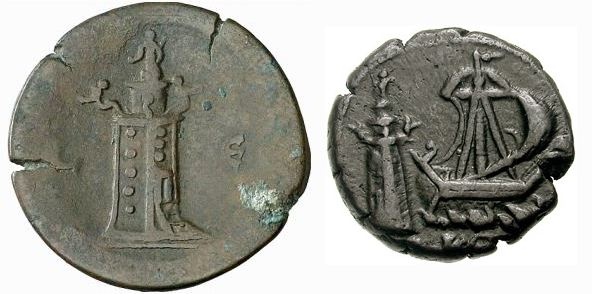În 956 un cutremur a zguduit farul, dar nu a făcut mari stricăciuni. Apoi în 1303 și 1323 două mari cutremure au distrus farul. În 1480 mamelucul Qaitbay a construit o fortăreață pe locul farului, folosind structurile și pietrele rămase.
În 1968, farul a fost redescoperit. UNESCO a sponsorizat o expediție pentru a trimite o echipă de arheologi marini, condusă de Honor Frost, pe site. Ea a confirmat existența ruinelor care reprezintă o parte a farului. Datorită lipsei arheologilor specializați și a zonei devenind o zonă militară, explorarea a fost pusă în așteptare.
Arheologii francezi, condus de Jean-Yves Empereur, au re-descoperit rămășițele fizice ale farului la sfârșitul anului 1994, pe podeaua portului de est al Alexandriei. Unele dintre aceste rămășițe au fost ridicate și se aflau în port la vedere publică la sfârșitul anului 1995.